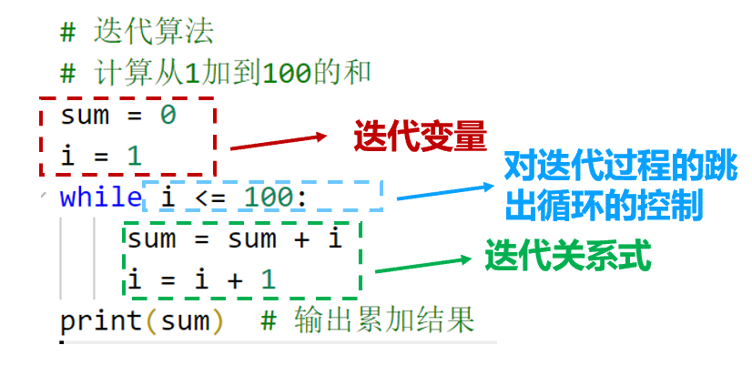

迭代算法
概念
迭代是一种重复反馈过程的活动，其目的通常是为了逼近所需目标或结果。
每一次对过程的重复称为一次“迭代”，而每一次迭代得到的结果会作为下一次迭代的初始值。因此，迭代法也被称为辗转法。
迭代算法在计算机科学、工程、数学和许多其他领域有广泛的应用。如机器学习的神经网络训练、Dijkstra算法、图像去噪等。
迭代算法的使用要点
1、确定迭代变量。
2、建立迭代关系式。
3、对迭代过程进行控制，不能让迭代过程无休止地重复执行。

迭代算法可视化呈现
Dijkstra 算法（迪杰斯特拉算法）是一种经典的图算法，用于寻找从一个起点到其他点的最短路径。每一次迭代都是在前一次迭代结果的基础上，进一步优化并推进解的进展，最终在多次迭代后得出所有节点的最短路径。
记录：